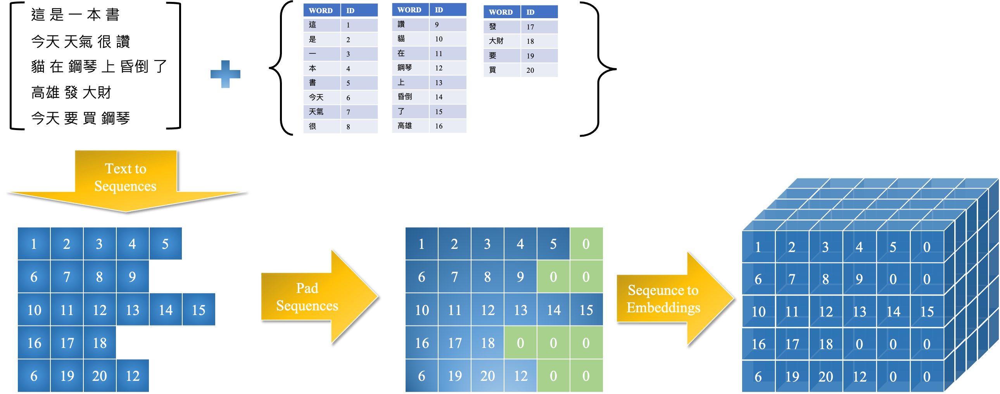

Sentiment Analysis Using BERT¶
In this tutorial, we show how to perform text classification of spammed mails using the pre-trained BERT model.
This example also shows the effectiveness of transfer learning.
BERT in Short¶
BERT is a model with absolute position embeddings so it’s usually advised to pad the inputs on the right rather than the left.
The BERT model was proposed in BERT: Pre-training of Deep Bidirectional Transformers for Language Understanding by Jacob Devlin, Ming-Wei Chang, Kenton Lee and Kristina Toutanova.
It’s a bidirectional transformer pretrained using a combination of masked language modeling objective and next sentence prediction on a large corpus comprising the Toronto Book Corpus and Wikipedia.
In particular, BERT was trained with the masked language modeling (MLM) and next sentence prediction (NSP) objectives. It is efficient at predicting masked tokens and at NLU in general, but is not optimal for text generation.
The size of the large BERT model:
Transformer blocks: 24
Embedding dimension: 1024
Attention heads: 16
Total number of parameters: 340M
The size of GPT-2 Model:
Transformer blocks: 48
Sequence length: 1024
Embedding dimension: 1600
Total number of parameters: 1.5B
Setup¶
import tensorflow as tf
import tensorflow.keras as keras
import pandas as pd
import sklearn
import unicodedata
import numpy as np
import re
import nltk
from nltk.corpus import stopwords
# import tensorflow_hub as hub
# from sklearn.model_selection import train_test_split
# from tqdm import tqdm
# import pickle
# from keras.models import Model
# import keras.backend as K
# from sklearn.metrics import confusion_matrix,f1_score,classification_report
# import matplotlib.pyplot as plt
# from keras.callbacks import ModelCheckpoint
# import itertools
# from keras.models import load_model
# from sklearn.utils import shuffle
# from transformers import *
# from transformers import BertTokenizer, TFBertModel, BertConfig
Data Loading¶
def unicode_to_ascii(s):
return ''.join(c for c in unicodedata.normalize('NFD', s) if unicodedata.category(c) != 'Mn')
def clean_stopwords_shortwords(w):
stopwords_list=stopwords.words('english')
words = w.split()
clean_words = [word for word in words if (word not in stopwords_list) and len(word) > 2]
return " ".join(clean_words)
def preprocess_sentence(w):
w = unicode_to_ascii(w.lower().strip())
w = re.sub(r"([?.!,¿])", r" ", w)
w = re.sub(r'[" "]+', " ", w)
w = re.sub(r"[^a-zA-Z?.!,¿]+", " ", w)
w=clean_stopwords_shortwords(w)
w=re.sub(r'@\w+', '',w)
return w
csv_file='../../../RepositoryData/data/kaggle-SMS-Spam-Collection-Dataset/spam.csv'
csv_data=pd.read_csv(data_file,encoding='ISO-8859-1')
csv_data.head()
| v1 | v2 | Unnamed: 2 | Unnamed: 3 | Unnamed: 4 | |
|---|---|---|---|---|---|
| 0 | ham | Go until jurong point, crazy.. Available only ... | NaN | NaN | NaN |
| 1 | ham | Ok lar... Joking wif u oni... | NaN | NaN | NaN |
| 2 | spam | Free entry in 2 a wkly comp to win FA Cup fina... | NaN | NaN | NaN |
| 3 | ham | U dun say so early hor... U c already then say... | NaN | NaN | NaN |
| 4 | ham | Nah I don't think he goes to usf, he lives aro... | NaN | NaN | NaN |
Data Preprocessing¶

print('File has {} rows and {} columns'.format(csv_data.shape[0],csv_data.shape[1]))
File has 5572 rows and 5 columns
csv_data = csv_data.loc[:, ~csv_data.columns.str.contains('Unnamed: 2', case=False)]
csv_data = csv_data.loc[:, ~csv_data.columns.str.contains('Unnamed: 3', case=False)]
csv_data = csv_data.loc[:, ~csv_data.columns.str.contains('Unnamed: 4', case=False)]
csv_data.head()
| v1 | v2 | |
|---|---|---|
| 0 | ham | Go until jurong point, crazy.. Available only ... |
| 1 | ham | Ok lar... Joking wif u oni... |
| 2 | spam | Free entry in 2 a wkly comp to win FA Cup fina... |
| 3 | ham | U dun say so early hor... U c already then say... |
| 4 | ham | Nah I don't think he goes to usf, he lives aro... |
csv_data=csv_data.dropna() # Drop NaN valuues, if any
csv_data=csv_data.reset_index(drop=True) # Reset index after dropping the columns/rows with NaN values
csv_data.rename(columns={'v1':'label','v2':'text'}, inplace=True)
csv_data = sklearn.utils.shuffle(csv_data) # Shuffle the dataset
#print('Available labels: ',data.label.unique()) # Print all the unique labels in the dataset
csv_data['text']=csv_data['text'].map(preprocess_sentence) # Clean the text column using preprocess_sentence function defined above
print('File has {} rows and {} columns'.format(csv_data.shape[0],csv_data.shape[1]))
csv_data.head()
File has 5572 rows and 2 columns
| label | text | |
|---|---|---|
| 838 | spam | tried contact offer new video phone anytime ne... |
| 5000 | ham | nope since ayo travelled forgotten guy |
| 858 | ham | spoons okay |
| 5308 | ham | coming back thursday yay gonna get money cheer... |
| 49 | ham | know stubborn even want hospital kept telling ... |
BERT Tokenizer¶
Google’s open-sourced tensorflow implementation of BERT:
BERT-Base, Uncased: 12-layer, 768-hidden, 12-heads, 110M parameters
BERT-Large, Uncased: 24-layer, 1024-hidden, 16-heads, 340M parameters
BERT-Base, Cased: 12-layer, 768-hidden, 12-heads , 110M parameters
BERT-Large, Cased: 24-layer, 1024-hidden, 16-heads, 340M parameters
BERT-Base, Multilingual Case: 104 languages, 12-layer, 768-hidden, 12-heads, 110M parameters
BERT-Base, Chinese: Chinese Simplified and Traditional, 12-layer, 768-hidden, 12-heads, 110M parameters
Tip
In transformers, there are several predefined tensorflow models that use BERT for classification. Please see Hugginface transformers’s BERT documentation.
num_classes = len(csv_data.label.unique())
from transformers import *
from transformers import BertTokenizer, TFBertModel, BertConfig
bert_tokenizer = BertTokenizer.from_pretrained("bert-base-uncased")
bert_model = TFBertForSequenceClassification.from_pretrained('bert-base-uncased',num_labels=num_classes)
Some layers from the model checkpoint at bert-base-uncased were not used when initializing TFBertForSequenceClassification: ['mlm___cls', 'nsp___cls']
- This IS expected if you are initializing TFBertForSequenceClassification from the checkpoint of a model trained on another task or with another architecture (e.g. initializing a BertForSequenceClassification model from a BertForPreTraining model).
- This IS NOT expected if you are initializing TFBertForSequenceClassification from the checkpoint of a model that you expect to be exactly identical (initializing a BertForSequenceClassification model from a BertForSequenceClassification model).
Some layers of TFBertForSequenceClassification were not initialized from the model checkpoint at bert-base-uncased and are newly initialized: ['classifier', 'dropout_75']
You should probably TRAIN this model on a down-stream task to be able to use it for predictions and inference.
sent= 'how to train the model, lets look at how a trained model calculates its prediction.'
tokens=bert_tokenizer.tokenize(sent)
print(tokens)
['how', 'to', 'train', 'the', 'model', ',', 'lets', 'look', 'at', 'how', 'a', 'trained', 'model', 'calculate', '##s', 'its', 'prediction', '.']
Parameters of TFBertForSequenceClassification model:
input_ids: The input ids are often the only required parameters to be passed to the model as input. They are token indices, numerical representations of tokens building the sequences that will be used as input by the model. This can be obtained by the BERT Tokenizer. input_ids (Numpy array or tf.Tensor of shape (batch_size, sequence_length)) Indices of input sequence tokens in the vocabulary.batch_size: Number of examples or sentences batch sequence_length : A number of tokens in a sentence.
attention_mask (Numpy array or tf.Tensor of shape (batch_size, sequence_length)) – Mask to avoid performing attention on padding token indices. Mask values selected in [0, 1]: 1 for tokens that are not masked, 0 for tokens that are marked (0 if the token is added by padding). This argument indicates to the model which tokens should be attended to, and which should not. If we have 2 sentences and the sequence length of one sentence is 8 and another one is 10, then we need to make them of equal length and for that, padding is required. To distinguish between the padded and nonpadded input attention mask is used.
labels (tf.Tensor of shape (batch_size,), optional) – Labels for computing the sequence classification/regression loss. Indices should be in [0, …, num_classes- 1]. If num_classes == 1 a regression loss is computed (Mean-Square loss), If num_classes > 1 a classification loss is computed (Cross-Entropy). These tokens can then be converted into IDs which are understandable by the model. This can be done by directly feeding the sentence to the tokenizer.
tokenized_sequence= bert_tokenizer.encode_plus(sent,add_special_tokens = True, max_length =30,padding = True,
return_attention_mask = True)
tokenized_sequence
{'input_ids': [101, 2129, 2000, 3345, 1996, 2944, 1010, 11082, 2298, 2012, 2129, 1037, 4738, 2944, 18422, 2015, 2049, 17547, 1012, 102], 'token_type_ids': [0, 0, 0, 0, 0, 0, 0, 0, 0, 0, 0, 0, 0, 0, 0, 0, 0, 0, 0, 0], 'attention_mask': [1, 1, 1, 1, 1, 1, 1, 1, 1, 1, 1, 1, 1, 1, 1, 1, 1, 1, 1, 1]}
bert_tokenizer.decode(tokenized_sequence['input_ids'])
'[CLS] how to train the model, lets look at how a trained model calculates its prediction. [SEP]'
From Text to BERT Input¶
csv_data['label_num'] = csv_data['label'].map({'ham':0,'spam':1})
csv_data.head()
| label | text | label_num | |
|---|---|---|---|
| 838 | spam | tried contact offer new video phone anytime ne... | 1 |
| 5000 | ham | nope since ayo travelled forgotten guy | 0 |
| 858 | ham | spoons okay | 0 |
| 5308 | ham | coming back thursday yay gonna get money cheer... | 0 |
| 49 | ham | know stubborn even want hospital kept telling ... | 0 |
sentences=csv_data['text']
labels=csv_data['label_num']
len(sentences),len(labels)
(5572, 5572)
input_ids=[]
attention_masks=[]
for sent in sentences:
bert_inp=bert_tokenizer.encode_plus(sent,add_special_tokens = True, max_length =32,pad_to_max_length = True,return_attention_mask = True)
input_ids.append(bert_inp['input_ids'])
attention_masks.append(bert_inp['attention_mask'])
## alvin's note:
## according to the warning, we should use `padding=True` and `max_length = 32`
## It didn't work. the tokenizer won't pad the sequences
/Users/Alvin/opt/anaconda3/envs/python-notes/lib/python3.7/site-packages/transformers/tokenization_utils_base.py:2022: FutureWarning: The `pad_to_max_length` argument is deprecated and will be removed in a future version, use `padding=True` or `padding='longest'` to pad to the longest sequence in the batch, or use `padding='max_length'` to pad to a max length. In this case, you can give a specific length with `max_length` (e.g. `max_length=45`) or leave max_length to None to pad to the maximal input size of the model (e.g. 512 for Bert).
FutureWarning,
input_ids=np.asarray(input_ids).astype('int32')
attention_masks=np.array(attention_masks)
labels=np.array(labels)
len(input_ids),len(attention_masks),len(labels)
(5572, 5572, 5572)
BERT Tokenizer returns a dictionary from which we can get the input ds and the attention masks. Convert all the encoding to NumPy arrays. Arguments of BERT Tokenizer: text (str, List[str], List[List[str]]) – The sequence or batch of sequences to be encoded. Each sequence can be a string or a list of strings (pretokenized string). If the sequences are provided as list of strings (pretokenized), you must set is_split_into_words=True (to lift the ambiguity with a batch of sequences). 2. add_special_tokens (bool, optional, defaults to True) – Whether or not to encode the sequences with the special tokens relative to their model. 3. max_length (int, optional) — Controls the maximum length to use by one of the truncation/padding parameters. (max_length≤512) 4. pad_to_max_length (bool, optional, defaults to True) – Whether or not to pad the sequences to the maximum length. 5. return_attention_mask (bool, optional) –
Train-Test Split¶
train_inp,val_inp,train_label,val_label,train_mask,val_mask=sklearn.model_selection.train_test_split(input_ids,labels,attention_masks,test_size=0.2)
print('Train inp shape {} Val input shape {}\nTrain label shape {} Val label shape {}\nTrain attention mask shape {} Val attention mask shape {}'.format(train_inp.shape,val_inp.shape,train_label.shape,val_label.shape,train_mask.shape,val_mask.shape))
Train inp shape (4457, 32) Val input shape (1115, 32)
Train label shape (4457,) Val label shape (1115,)
Train attention mask shape (4457, 32) Val attention mask shape (1115, 32)
Model Setup¶
log_dir='./sentiment-analysis-using-bert-keras/tensorboard_data/tb_bert'
model_save_path='./sentiment-analysis-using-bert-keras/models/bert_model.h5'
import os
path = "./sentiment-analysis-using-bert-keras/models/"
callbacks = [tf.keras.callbacks.ModelCheckpoint(filepath=model_save_path,save_weights_only=True,monitor='val_loss',mode='min',save_best_only=True),keras.callbacks.TensorBoard(log_dir=log_dir)]
print('\nBert Model',bert_model.summary())
loss = tf.keras.losses.SparseCategoricalCrossentropy(from_logits=True)
metric = tf.keras.metrics.SparseCategoricalAccuracy('accuracy')
optimizer = tf.keras.optimizers.Adam(learning_rate=2e-5,epsilon=1e-08)
bert_model.compile(loss=loss,optimizer=optimizer,metrics=[metric])
Model: "tf_bert_for_sequence_classification_1"
_________________________________________________________________
Layer (type) Output Shape Param #
=================================================================
bert (TFBertMainLayer) multiple 109482240
_________________________________________________________________
dropout_75 (Dropout) multiple 0
_________________________________________________________________
classifier (Dense) multiple 1538
=================================================================
Total params: 109,483,778
Trainable params: 109,483,778
Non-trainable params: 0
_________________________________________________________________
Bert Model None
Model Training¶
history=bert_model.fit([train_inp,train_mask],
train_label,
batch_size=32,
epochs=1,
validation_data=([val_inp,val_mask],val_label),
callbacks=callbacks)
# bert_model.save_weights(model_save_path)
Model Evaluation: Metrics¶
# model_save_path='./sentiment-analysis-using-bert-keras/models/bert_model.h5'
trained_model = TFBertForSequenceClassification.from_pretrained('bert-base-uncased',num_labels=2)
trained_model.compile(loss=loss,optimizer=optimizer, metrics=[metric])
trained_model.load_weights(model_save_path)
preds = trained_model.predict([val_inp,val_mask],batch_size=32)
pred_labels = preds[0].argmax(axis=1)
f1 = sklearn.metrics.f1_score(val_label,pred_labels)
print('F1 score',f1)
print('Classification Report')
target_names=csv_data.label.unique()
print(sklearn.metrics.classification_report(val_label,pred_labels,target_names=target_names))
print('Training and saving built model.....')
F1 score 0.9148936170212766
Classification Report
precision recall f1-score support
spam 0.99 0.98 0.99 978
ham 0.89 0.94 0.91 137
accuracy 0.98 1115
macro avg 0.94 0.96 0.95 1115
weighted avg 0.98 0.98 0.98 1115
Training and saving built model.....
trained_model.evaluate([val_inp,val_mask],batch_size=32)
35/35 [==============================] - 2s 2ms/step - loss: 0.0000e+00 - accuracy: 0.9785
[0.0, 0.9784753322601318]